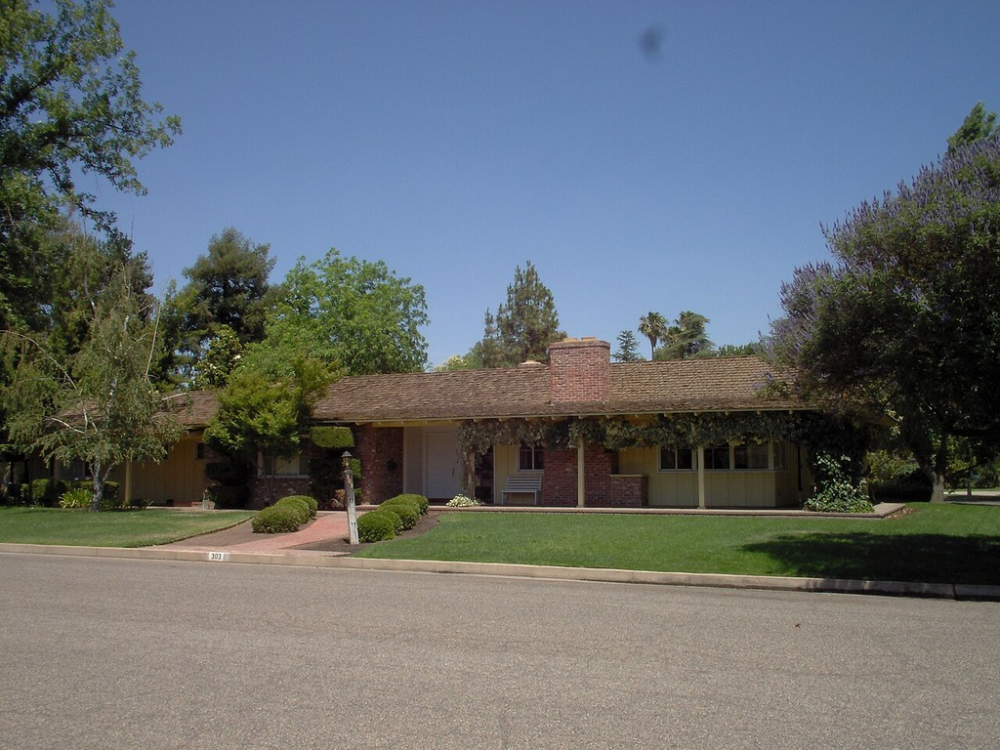

Sample squares don’t sell a front yard.
Sample turf squares in a truck bed do not show how a full front yard will look against a homeowner’s stucco, driveway, and shade trees—slowing down estimates and follow-up closes.
Snap or upload a customer’s yard photo on site, pick one of five artificial-grass styles, and hand them a photorealistic before/after mockup with your company name and phone number burned into the share image.
Built for: Artificial-grass contractors, landscape sales reps, and estimators closing residential turf jobs.
Interactive before/after walkthrough on a public-domain ranch lawn (Lush Green preset).


Sample turf squares in a truck bed do not show how a full front yard will look against a homeowner’s stucco, driveway, and shade trees—slowing down estimates and follow-up closes.
A zero-framework phone web app crops the photo in the browser, prompts FLUX.2 to replace only lawn and bare dirt while preserving the house and hardscape, and renders an instant slider plus branded Save/Share export.
Crops uploads to valid 9:16–16:9 aspect ratios and resizes to 512px max side, then requests a 1024px result at the original aspect ratio.
Draws the interactive before/after slider, caption bar, and disclaimer on an HTML canvas.
The export image carries your shop name and phone number from Settings.
Constant-time SHA-256 comparison on the x-access-pin header.
3-attempt retry on transient 3043 errors, then automatic fallback to flux-2-klein-4b.
Strict 3 MB upload limit and zero server-side photo storage.
Take or upload the customer’s yard photo on your phone. It’s cropped and resized in the browser.
Choose Lush Green, Natural Olive, Mow Stripes, Emerald, or Putting Green.
Slide between before and after, then Save/Share the branded image with the homeowner.
No. Photos pass directly to Workers AI for generation and are never persisted on the server. Uploads are limited to 3 MB.
The prompt asks FLUX.2 to replace only lawn and bare dirt while preserving the house and hardscape. It is a preview; the real install may vary.
To protect the daily free Workers AI allowance. Request a temporary demo PIN with the form.
Yes. The Save/Share image includes your shop name and phone number from Settings, and a custom white-label setup can be deployed on your own Cloudflare account.
Request a live walkthrough, temporary demo PIN, or custom white-label setup for your installation crew.